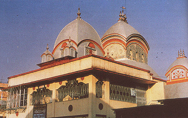
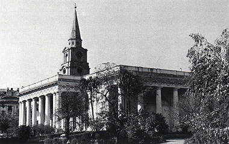
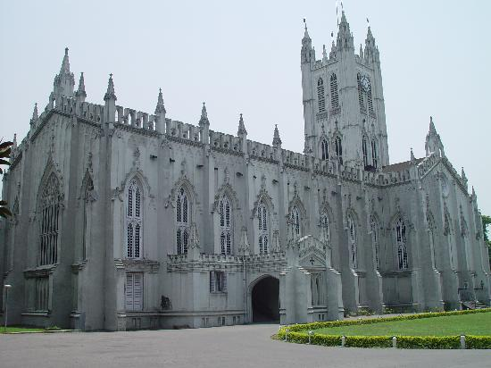
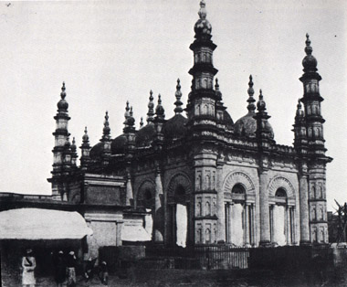

RELIGIOUS BUILDINGS
Kolkata is a city well known for its tolerance for all communities. In its three hundred years of existence, people from all parts of the country and the world have not only made the city their home but also freely practiced their religious beliefs. Today, there are many old religious buildings dating over a century or more which are a pride for the city. Perhaps nowhere in India is our country's secular credentials so much in evidence as in this city. Here are a few examples of the religious buildings built by Christians, Hindus and Muslims which are over a hundred years old and a part of the city's heritage.
KALIGHAT

ST.JOHN's CHURCH

ST.PAUL CATHEDRAL

TIPU SULTAN MOSQUE
